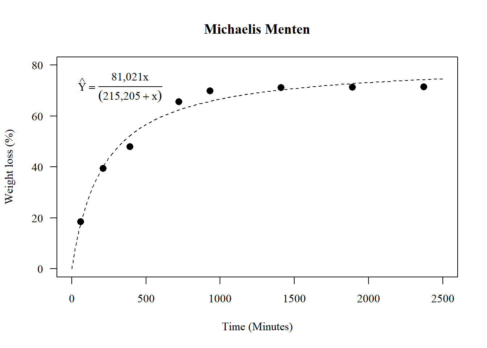

20 Análise de regressão linear e não-linear
Nas mais diversas áreas da pesquisa, seja ela na área médica, biológica, industrial, química entre outras, é de grande interesse verificar se duas ou mais variáveis estão relacionadas de alguma forma. Para expressar esta relação é muito importante estabelecer um modelo matemático. Este tipo de modelagem é chamado de regressão, e ajuda a entender como determinadas variáveis influenciam outra variável, ou seja, verifica como o comportamento de uma ou mais variáveis podem mudar o comportamento de outra.
Na agronomia, a análise de regressão é muito utilizada por exemplo, para estabelecer doses de máxima resposta de produtos fitossanitários, adubos, populações de plantas, etc..; ou mesmo no estudo do desenvolvimento de uma planta, o que chamamos de curva de crescimento.
Popularmente, é comum a utilização de curva do tipo polinomial, visto a facilidade de sua utilização e explicação. Todavia, muito dos dados não se comportam dessa forma, ainda que o ajuste seja significativo, podendo assim, levar a conclusões limitadas em função da análise inadequada. Logo, o presente tutorial apresenta diferentes ajustes de regressão linear e não-linear de um mesmo conjunto de dados.
Neste tutorial, você irá reparar que em quase todos os modelos, o coeficientes serão significativos, demonstrando que quase todos os modelos são válidos para explicar o comportamento dos dados. A questão é, qual o melhor modelo?

Obs. Este é um tutorial para demonstração dos modelos de regressão. Alguns casos ele não é significativo ou uma das pressuposições não é atendida. É um tutorial apenas para fins didáticos.
20.1 Conjunto de dados
O conjunto de dados é de um experimento cujo objetivo foi avaliar a perda de massa da casca de romã em estufa a \(60^oC\). Foi utilizado oito repetições em oito avaliações (60, 210,390, 720, 930, 1410, 1890 e 2370 minutos)
`PERDA DE MASSA CAA`=c(18.15810,17.99376,14.81450,15.39822,21.62234,20.45106,18.65319,20.96547,36.77274,39.92503,34.60874,35.70286,43.57189,42.19460,39.23367,43.36169,52.90384,52.64886,45.61431,47.81200,44.41734,47.40493,46.15373,47.12330,65.29474,67.78859,64.60738,66.24453,63.97464,66.77636,65.37446,65.11912,67.86385,70.68877,69.45271,70.33895,69.43583,71.56150,69.73480,69.97407,69.02813,71.28882,71.17485,71.22420,71.32344,72.46687,71.17063,72.07550,69.16576,71.44176,71.30762,71.34075,71.42775,72.59710,71.28255,72.19996,69.30339,71.59471,71.44040,71.45729,71.53206,72.72733,71.39446,72.32441)
TEMPO=rep(c(60,210,390,720,930,1410,1890,2370),e=8)
dados=data.frame(TEMPO,`PERDA DE MASSA CAA`)
y=c(`PERDA DE MASSA CAA`)
x=c(TEMPO)
data=data.frame(y,x)20.1.1 Média e desvio-padrão amostral
## 60 210 390 720 930 1410 1890 2370
## 18,50708 39,42140 48,00979 65,64748 69,88131 71,21905 71,34541 71,47176## 60 210 390 720 930 1410 1890 2370
## 2,485224 3,479257 3,133973 1,229025 1,080134 1,007882 1,004939 1,002227## [1] 60 210 390 720 930 1410 1890 237020.1.2 Gráficos exploratórios


20.1.6 Gráfico de linhas com as médias


20.2 Linear Simples
O modelo de regressão linear simples (MRLS) se define uma relação linear entre a variável dependente e uma variável independente.
\[Y=\beta_1x+\beta_0\]
20.2.1 Criando o modelo de regressão
##
## Call:
## lm(formula = y ~ x)
##
## Residuals:
## Min 1Q Median 3Q Max
## -24,4181 -8,1253 0,4191 8,8542 16,0914
##
## Coefficients:
## Estimate Std. Error t value Pr(>|t|)
## (Intercept) 38,099512 2,368998 16,08 < 2e-16 ***
## x 0,018886 0,001876 10,07 1,15e-14 ***
## ---
## Signif. codes: 0 '***' 0,001 '**' 0,01 '*' 0,05 '.' 0,1 ' ' 1
##
## Residual standard error: 11,62 on 62 degrees of freedom
## Multiple R-squared: 0,6205, Adjusted R-squared: 0,6144
## F-statistic: 101,4 on 1 and 62 DF, p-value: 1,147e-1420.2.2 Diagnóstico
20.2.3 Normalidade dos erros
## Gaussian model (lm object)
##
## Shapiro-Wilk normality test
##
## data: resid(modl)
## W = 0,94067, p-value = 0,00407920.2.4 Falta de ajuste (Desvio da regressão)
## Analysis of Variance Table
##
## Model 1: y ~ x
## Model 2: y ~ as.factor(x)
## Res.Df RSS Df Sum of Sq F Pr(>F)
## 1 62 8377,2
## 2 56 236,7 6 8140,5 321,02 < 2,2e-16 ***
## ---
## Signif. codes: 0 '***' 0,001 '**' 0,01 '*' 0,05 '.' 0,1 ' ' 120.2.5 Construindo gráfico
par(family="serif")
plot(media~tempo, main="Linear Simples",
las=1, cex=1.3,
ylab="Weight loss (%)", xlim=c(0,2500),
xlab="Time (Minutes)",
pch=16, ylim=c(0,80))
curve(coef(modl)[1]+coef(modl)[2]*x, add=TRUE, lty=2)
legend("topleft",
cex=1,
bty="n",
legend = c(expression(hat(Y)==38.09951+0.01889*x)))

20.3 Quadrático
\[Y=\beta_2x^2+\beta_1x+\beta_0\]
20.3.1 Criando modelo de regressão
##
## Call:
## lm(formula = y ~ x + I(x^2))
##
## Residuals:
## Min 1Q Median 3Q Max
## -11,428 -5,288 1,756 4,360 8,018
##
## Coefficients:
## Estimate Std. Error t value Pr(>|t|)
## (Intercept) 2,226e+01 1,528e+00 14,57 <2e-16 ***
## x 6,763e-02 3,367e-03 20,09 <2e-16 ***
## I(x^2) -2,055e-05 1,371e-06 -14,99 <2e-16 ***
## ---
## Signif. codes: 0 '***' 0,001 '**' 0,01 '*' 0,05 '.' 0,1 ' ' 1
##
## Residual standard error: 5,415 on 61 degrees of freedom
## Multiple R-squared: 0,919, Adjusted R-squared: 0,9163
## F-statistic: 345,9 on 2 and 61 DF, p-value: < 2,2e-1620.3.2 Diagnóstico do modelo
20.3.3 Normalidade dos erros
## Gaussian model (lm object)
##
## Shapiro-Wilk normality test
##
## data: resid(mod1)
## W = 0,92285, p-value = 0,00065520.3.4 Fator de inflação de variância (Multicolinearidade)
## x I(x^2)
## 14,84834 14,8483420.3.5 Falta de ajuste (Desvio da regressão)
## Analysis of Variance Table
##
## Model 1: y ~ x + I(x^2)
## Model 2: y ~ as.factor(x)
## Res.Df RSS Df Sum of Sq F Pr(>F)
## 1 61 1788,55
## 2 56 236,68 5 1551,9 73,438 < 2,2e-16 ***
## ---
## Signif. codes: 0 '***' 0,001 '**' 0,01 '*' 0,05 '.' 0,1 ' ' 120.3.6 Construindo gráfico
par(family="serif")
plot(media~tempo, main="Quadrático",
las=1, cex=1.3,
ylab="Weight loss (%)", xlim=c(0,2500),
xlab="Time (Minutes)",
pch=16, ylim=c(0,80))
curve(coef(mod1)[1]+coef(mod1)[2]*x+coef(mod1)[3]*x^2, add=TRUE, lty=2)
legend("topleft",
cex=1,
bty="n",
legend = c(expression(hat(Y)==22.26+0.006763*x-0.00002055*x^2)))
20.3.7 Ponto de máximo (Ou mínimo)
O ponto de máximo ou mínimo podem ser encontrados de várias formas
20.3.8 Manualmente
## x
## 1645,317## (Intercept)
## 77,8947520.3.9 Usando o which.max ou which.min
## [1] 1653,9
20.4 Cúbico
\[Y=\beta_3x^3+\beta_2x^2+\beta_1x+\beta_0\]
20.4.1 Construindo o modelo
##
## Call:
## lm(formula = y ~ x + I(x^2) + I(x^3))
##
## Residuals:
## Min 1Q Median 3Q Max
## -6,0186 -1,3299 -0,3928 1,3155 8,0377
##
## Coefficients:
## Estimate Std. Error t value Pr(>|t|)
## (Intercept) 1,406e+01 9,927e-01 14,16 <2e-16 ***
## x 1,174e-01 4,125e-03 28,47 <2e-16 ***
## I(x^2) -7,536e-05 4,189e-06 -17,99 <2e-16 ***
## I(x^3) 1,524e-08 1,149e-09 13,27 <2e-16 ***
## ---
## Signif. codes: 0 '***' 0,001 '**' 0,01 '*' 0,05 '.' 0,1 ' ' 1
##
## Residual standard error: 2,753 on 60 degrees of freedom
## Multiple R-squared: 0,9794, Adjusted R-squared: 0,9784
## F-statistic: 951,1 on 3 and 60 DF, p-value: < 2,2e-1620.4.2 Diagnóstico do modelo
20.4.3 Normalidade dos erros
## Gaussian model (lm object)
##
## Shapiro-Wilk normality test
##
## data: resid(mod2)
## W = 0,94796, p-value = 0,00909320.4.4 Fator de inflação de variância (Multicolinearidade)
## x I(x^2) I(x^3)
## 86,25922 536,46498 221,2516420.4.5 Falta de ajuste (Desvio da regressão)
## Analysis of Variance Table
##
## Model 1: y ~ x + I(x^2) + I(x^3)
## Model 2: y ~ as.factor(x)
## Res.Df RSS Df Sum of Sq F Pr(>F)
## 1 60 454,60
## 2 56 236,68 4 217,93 12,891 1,666e-07 ***
## ---
## Signif. codes: 0 '***' 0,001 '**' 0,01 '*' 0,05 '.' 0,1 ' ' 120.4.6 Construindo o gráfico
par(family="serif")
plot(media~tempo, main="Cúbico",
las=1, cex=1.3,
ylab="Weight loss (%)", xlim=c(0,2500),
xlab="Time (Minutes)",
pch=16, ylim=c(0,80))
curve(coef(mod2)[1]+coef(mod2)[2]*x+coef(mod2)[3]*x^2+coef(mod2)[4]*x^3, add=TRUE, lty=2)
legend("topleft",
cex=1,
bty="n",
legend = c(expression(hat(Y)==14.06+0.01174*x-0.00007536*x^2+0.00000001524*x^3)))
20.4.7 ponto de máximo, mínimo e inflexão
plot(media~tempo)
curva=curve(coef(mod2)[1]+coef(mod2)[2]*x+coef(mod2)[3]*x^2+coef(mod2)[4]*x^3, add=TRUE, lty=2)# ponto de inflexão
pi=-(2*coef(mod2)[3])/(3*2*coef(mod2)[4])
# ponto de máximo anterior ao ponto de inflexão
xmax=curva$x[which.max(curva$y[curva$x<pi])]
# ponto de mínimo posterior ao ponto de inflexão
xmin=curva$x[which.max(curva$y[curva$x<pi])+which.min(curva$y[curva$x>xmax])]plot(media~tempo)
curva=curve(coef(mod2)[1]+coef(mod2)[2]*x+coef(mod2)[3]*x^2+coef(mod2)[4]*x^3, add=TRUE, lty=1)
abline(v=c(xmax,xmin,pi),lty=2)

20.5 Logarítmico
\[Y=\beta_{0}+\beta_{1}\log(x)\]
20.5.1 Construindo modelo
##
## Call:
## lm(formula = y ~ log(x))
##
## Residuals:
## Min 1Q Median 3Q Max
## -8,5359 -3,5194 -0,5506 3,6366 8,4348
##
## Coefficients:
## Estimate Std. Error t value Pr(>|t|)
## (Intercept) -42,7285 3,3261 -12,85 <2e-16 ***
## log(x) 15,5158 0,5096 30,45 <2e-16 ***
## ---
## Signif. codes: 0 '***' 0,001 '**' 0,01 '*' 0,05 '.' 0,1 ' ' 1
##
## Residual standard error: 4,724 on 62 degrees of freedom
## Multiple R-squared: 0,9373, Adjusted R-squared: 0,9363
## F-statistic: 927,1 on 1 and 62 DF, p-value: < 2,2e-1620.5.2 Diagnóstico do modelo
## Gaussian model (lm object)
##
## Shapiro-Wilk normality test
##
## data: resid(modelog)
## W = 0,94476, p-value = 0,006371
20.6 Michaelis-Menten (MM)
\[Y=\frac{A\times x}{V+x}\]
20.6.1 Construindo o modelo
data=data.frame(y,x)
n0 <- nls(formula=y~A*x/(V+x), data=data,
start=list(A=max(y), V=100), trace=TRUE)## 2726,427 : 72,72733 100,00000
## 820,4424 : 78,84265 179,59765
## 691,338 : 80,90678 212,88993
## 690,8008 : 81,02471 215,24858
## 690,8006 : 81,02129 215,20409
## 690,8006 : 81,02137 215,20519##
## Formula: y ~ A * x/(V + x)
##
## Parameters:
## Estimate Std. Error t value Pr(>|t|)
## A 81,021 1,004 80,67 <2e-16 ***
## V 215,205 11,711 18,38 <2e-16 ***
## ---
## Signif. codes: 0 '***' 0,001 '**' 0,01 '*' 0,05 '.' 0,1 ' ' 1
##
## Residual standard error: 3,338 on 62 degrees of freedom
##
## Number of iterations to convergence: 5
## Achieved convergence tolerance: 3,035e-0720.6.2 Diagnóstico do modelo
##
## Shapiro-Wilk normality test
##
## data: resid(n0)
## W = 0,9717, p-value = 0,148220.6.3 Construindo o gráfico
A <- coef(n0)[1]; V <- coef(n0)[2]
par(family="serif")
plot(media~tempo, main="Michaelis Menten",
las=1, cex=1.3,
ylab="Weight loss (%)", xlim=c(0,2500),
xlab="Time (Minutes)",
pch=16, ylim=c(0,80))
curve(A*x/(V+x), add=TRUE, lty=2)
legend("topleft",
cex=1,
bty="n",
legend = c(expression(hat(Y)==frac(81.021*x,(215.205+x)))))
20.6.4 Utilizando outro método
## Nonlinear regression model
## model: y ~ SSmicmen(x, Vm, K)
## data: data
## Vm K
## 81,02 215,20
## residual sum-of-squares: 690,8
##
## Number of iterations to convergence: 0
## Achieved convergence tolerance: 2,047e-06plot(media~tempo, main="Michaelis-Menten",
las=1, cex=1.3,
ylab="Weight loss (%)", xlim=c(0,2500),
xlab="Time (Minutes)",
pch=16, ylim=c(0,80))
curve((81.02135*x)/(215.20499+x), add=T)
20.7 MM Modificado
\[Y=\frac{A\times x}{V+x}+D\times x \]
20.7.1 Construindo modelo
data=data.frame(y,x)
n1 <- nls(formula=y~A*x/(V+x)+D*x, data=data,
start=list(A=max(y), V=100,D=10), trace=TRUE)## 10206286603 : 72,72733 100,00000 10,00000
## 802,0047 : 8,061554e+01 1,857416e+02 -9,194725e-04
## 545,3405 : 91,710079373 263,748404929 -0,004630648
## 521,8705 : 96,954052340 297,103221016 -0,006224234
## 521,0745 : 98,085315801 303,935203239 -0,006567869
## 521,0613 : 98,241471280 304,881731574 -0,006617559
## 521,0611 : 98,261118528 305,001695810 -0,006623916
## 521,0611 : 98,263575225 305,016711452 -0,006624713##
## Formula: y ~ A * x/(V + x) + D * x
##
## Parameters:
## Estimate Std. Error t value Pr(>|t|)
## A 98,263575 4,439290 22,135 < 2e-16 ***
## V 305,016711 25,778649 11,832 < 2e-16 ***
## D -0,006625 0,001563 -4,239 7,73e-05 ***
## ---
## Signif. codes: 0 '***' 0,001 '**' 0,01 '*' 0,05 '.' 0,1 ' ' 1
##
## Residual standard error: 2,923 on 61 degrees of freedom
##
## Number of iterations to convergence: 7
## Achieved convergence tolerance: 9,342e-0620.7.2 Construindo gráfico
A <- coef(n1)[1]; V <- coef(n1)[2]; D<-coef(n1)[3]
par(family="serif")
plot(media~tempo, main="Michaelis Menten (Corrigido)",
las=1, cex=1.3,
ylab="Weight loss (%)", xlim=c(0,2500),
xlab="Time (Minutes)",
pch=16, ylim=c(0,80))
curve(A*x/(V+x)+D*x, add=TRUE, lty=2)
legend("topleft",
cex=1,
bty="n",
legend = c(expression(hat(Y)==frac(98.263572*x,(305.016698+x))-0.006625*x)))
20.8 Segmentada linear
\[Y=\beta_{1}X+\beta_{0} (if\leq X_1)\]
20.8.1 Construindo o modelo linear
##
## Call:
## lm(formula = y ~ x)
##
## Residuals:
## Min 1Q Median 3Q Max
## -24,4181 -8,1253 0,4191 8,8542 16,0914
##
## Coefficients:
## Estimate Std. Error t value Pr(>|t|)
## (Intercept) 38,099512 2,368998 16,08 < 2e-16 ***
## x 0,018886 0,001876 10,07 1,15e-14 ***
## ---
## Signif. codes: 0 '***' 0,001 '**' 0,01 '*' 0,05 '.' 0,1 ' ' 1
##
## Residual standard error: 11,62 on 62 degrees of freedom
## Multiple R-squared: 0,6205, Adjusted R-squared: 0,6144
## F-statistic: 101,4 on 1 and 62 DF, p-value: 1,147e-1420.8.2 Construindo o modelo segmentado
library(segmented)
modelo_pieciwise<- segmented(modelo_linear, seg.Z = ~x, psi=1000)
modelo_pieciwise## Call: segmented.lm(obj = modelo_linear, seg.Z = ~x, psi = 1000)
##
## Meaningful coefficients of the linear terms:
## (Intercept) x U1.x
## 19,83682 0,06684 -0,06582
##
## Estimated Break-Point(s):
## psi1.x
## 751,4##
## ***Regression Model with Segmented Relationship(s)***
##
## Call:
## segmented.lm(obj = modelo_linear, seg.Z = ~x, psi = 1000)
##
## Estimated Break-Point(s):
## Est. St.Err
## psi1.x 751,438 26,797
##
## Meaningful coefficients of the linear terms:
## Estimate Std. Error t value Pr(>|t|)
## (Intercept) 19,836818 1,106834 17,92 <2e-16 ***
## x 0,066839 0,002612 25,59 <2e-16 ***
## U1.x -0,065819 0,002873 -22,91 NA
## ---
## Signif. codes: 0 '***' 0,001 '**' 0,01 '*' 0,05 '.' 0,1 ' ' 1
##
## Residual standard error: 3,635 on 60 degrees of freedom
## Multiple R-Squared: 0,9641, Adjusted R-squared: 0,9623
##
## Convergence attained in 2 iter. (rel. change 0)20.8.3 Definindo limite com base no platô
20.8.4 Curva do primeiro segmento
##
## Call:
## lm(formula = y1 ~ x11)
##
## Residuals:
## Min 1Q Median 3Q Max
## -9,0327 -2,9998 -0,7374 2,1557 9,6988
##
## Coefficients:
## Estimate Std. Error t value Pr(>|t|)
## (Intercept) 19,836818 1,532481 12,94 8,22e-14 ***
## x11 0,066839 0,003617 18,48 < 2e-16 ***
## ---
## Signif. codes: 0 '***' 0,001 '**' 0,01 '*' 0,05 '.' 0,1 ' ' 1
##
## Residual standard error: 5,033 on 30 degrees of freedom
## Multiple R-squared: 0,9193, Adjusted R-squared: 0,9166
## F-statistic: 341,6 on 1 and 30 DF, p-value: < 2,2e-1620.8.5 Construindo gráfico
par(pch=16,las=1); par(family="serif")
plot(media~tempo,
las=1, cex=1.3, main="Segmentado Linear",
ylab="Weight loss (%)", xlim=c(0,2500),
xlab="Time (Minutes)",
pch=16, ylim=c(0,80))
a=curve(coef(mod)[1]+coef(mod)[2]*x,
to=modelo_pieciwise$psi[2], lty=2,add=T)
plato=a$y[round(a$x,3)==round(modelo_pieciwise$psi[2],3)]
lines(c(modelo_pieciwise$psi[2],max(x)),
c(plato,plato),lty=2)
legend("topleft",
cex=1,
legend=expression(hat(Y)==19.836817+0.066839*x~("if"~x~"<"~751.4)), bty="n")
20.9 Segmentada quadrático
\[Y=\beta_{2}X^2+\beta_{1}X+\beta_{0} (if\leq X_1)\]
20.9.1 Construindo o modelo quadrático
##
## Call:
## lm(formula = y ~ x + I(x^2))
##
## Residuals:
## Min 1Q Median 3Q Max
## -11,428 -5,288 1,756 4,360 8,018
##
## Coefficients:
## Estimate Std. Error t value Pr(>|t|)
## (Intercept) 2,226e+01 1,528e+00 14,57 <2e-16 ***
## x 6,763e-02 3,367e-03 20,09 <2e-16 ***
## I(x^2) -2,055e-05 1,371e-06 -14,99 <2e-16 ***
## ---
## Signif. codes: 0 '***' 0,001 '**' 0,01 '*' 0,05 '.' 0,1 ' ' 1
##
## Residual standard error: 5,415 on 61 degrees of freedom
## Multiple R-squared: 0,919, Adjusted R-squared: 0,9163
## F-statistic: 345,9 on 2 and 61 DF, p-value: < 2,2e-1620.9.2 Construindo o modelo segmentado
## Call: segmented.lm(obj = modelo_linear)
##
## Meaningful coefficients of the linear terms:
## (Intercept) x I(x^2) U1.x
## 1,580e+01 9,004e-02 -4,424e-06 -7,368e-02
##
## Estimated Break-Point(s):
## psi1.x
## 560,2##
## ***Regression Model with Segmented Relationship(s)***
##
## Call:
## segmented.lm(obj = modelo_linear)
##
## Estimated Break-Point(s):
## Est. St.Err
## psi1.x 560,234 28,392
##
## Meaningful coefficients of the linear terms:
## Estimate Std. Error t value Pr(>|t|)
## (Intercept) 1,580e+01 1,201e+00 13,151 <2e-16 ***
## x 9,004e-02 4,718e-03 19,083 <2e-16 ***
## I(x^2) -4,424e-06 1,764e-06 -2,508 0,0149 *
## U1.x -7,368e-02 6,596e-03 -11,171 NA
## ---
## Signif. codes: 0 '***' 0,001 '**' 0,01 '*' 0,05 '.' 0,1 ' ' 1
##
## Residual standard error: 3,073 on 59 degrees of freedom
## Multiple R-Squared: 0,9748, Adjusted R-squared: 0,973
##
## Convergence attained in 2 iter. (rel. change 0)20.9.3 Valores para o primeiro segmento
Obs. No caso do linear simples, podemo usar apenas os pontos abaixo do platô, no caso do segmentado quadrático aconselho englobar o ponto acima do acusado no platô. No meu caso é o ponto 930.
##
## Call:
## lm(formula = y1 ~ x11 + I(x11^2))
##
## Residuals:
## Min 1Q Median 3Q Max
## -5,5773 -2,1731 0,0432 1,2608 8,0591
##
## Coefficients:
## Estimate Std. Error t value Pr(>|t|)
## (Intercept) 1,357e+01 1,379e+00 9,839 7,13e-12 ***
## x11 1,175e-01 7,321e-03 16,047 < 2e-16 ***
## I(x11^2) -6,173e-05 7,151e-06 -8,632 2,15e-10 ***
## ---
## Signif. codes: 0 '***' 0,001 '**' 0,01 '*' 0,05 '.' 0,1 ' ' 1
##
## Residual standard error: 3,293 on 37 degrees of freedom
## Multiple R-squared: 0,9715, Adjusted R-squared: 0,97
## F-statistic: 630,9 on 2 and 37 DF, p-value: < 2,2e-1620.9.4 Construindo o gráfico
par(pch=16,las=1); par(family="serif")
plot(media~tempo, main="Segmentado Quadrático",
las=1, cex=1.3,
ylab="Weight loss (%)", xlim=c(0,2500),
xlab="Time (Minutes)",
pch=16, ylim=c(0,80))
maximo=-coef(mod)[2]/(2*coef(mod)[3])
a=curve(coef(mod)[1]+coef(mod)[2]*x+coef(mod)[3]*x^2,
to=maximo, lty=2,
add=T)
plato=a$y[round(a$x,3)==round(maximo,3)]
lines(c(maximo,max(x)),
c(plato,plato),lty=2)
legend("topleft",
legend=expression(Y==13.57+0.1175*x-0.00006173*x^2~("if"~x~"<"~951.5095)), bty="n")
20.10 Mitscherlich
\[Y=A \times(1-exp((B\times C)-(C \times X)\]
##
## Formula: y ~ A * (1 - exp((B * C) - (C * x)))
##
## Parameters:
## Estimate Std. Error t value Pr(>|t|)
## A 7,232e+01 5,606e-01 129,004 < 2e-16 ***
## B -4,438e+01 8,610e+00 -5,155 2,9e-06 ***
## C 2,874e-03 1,302e-04 22,066 < 2e-16 ***
## ---
## Signif. codes: 0 '***' 0,001 '**' 0,01 '*' 0,05 '.' 0,1 ' ' 1
##
## Residual standard error: 2,63 on 61 degrees of freedom
##
## Number of iterations to convergence: 7
## Achieved convergence tolerance: 8,634e-07par(pch=16,las=1); par(family="serif")
plot(media~tempo,main="Mitscherlich",
las=1, cex=1.3,
ylab="Weight loss (%)", xlim=c(0,2500),
xlab="Time (Minutes)",
pch=16, ylim=c(0,80))
b=summary(modelo2)
A=b$coefficients[1,1]
B=b$coefficients[2,1]
C=b$coefficients[3,1]
a=curve(A*(1-exp((B*C)-(C*x))),lty=2,add=T)
legend("topleft",expression(Y==72.31912*(1-e^{(-44.382759*0.002873)-(0.002873*x)})),bty="n")
20.11 Logística de 3 termos
\[Y = \frac{d}{1+exp(b(x-e))}\]
##
## Model fitted: Log-logistic (ED50 as parameter) with lower limit at 0 (3 parms)
##
## Parameter estimates:
##
## Estimate Std. Error t-value p-value
## b:(Intercept) -1,058194 0,062275 -16,992 < 2,2e-16 ***
## d:(Intercept) 79,599836 1,684582 47,252 < 2,2e-16 ***
## e:(Intercept) 208,408451 12,445682 16,745 < 2,2e-16 ***
## ---
## Signif. codes: 0 '***' 0,001 '**' 0,01 '*' 0,05 '.' 0,1 ' ' 1
##
## Residual standard error:
##
## 3,340759 (61 degrees of freedom)par(family="serif")
plot(model,main="Logístico LL.3",
las=1, cex=1.3,
ylab="Weight loss (%)",
xlab="Time (Minutes)",
pch=16,lty=2)
legend("topleft",
legend=expression(hat(Y)==frac(79.599836,
1+exp(-1.058194(x-208.408455)))), bty="n")
20.11.1 ED, DL ou EC
##
## Estimated effective doses
##
## Estimate Std. Error
## e:1:10 26,131 2,755##
## Estimated effective doses
##
## Estimate Std. Error
## e:1:50 208,408 12,446##
## Estimated effective doses
##
## Estimate Std. Error
## e:1:90 1662,2 267,420.12 Logística de 4 termos
\[Y = c-\frac{d-c}{1+exp(b(x-e))}\]
##
## Model fitted: Log-logistic (ED50 as parameter) (4 parms)
##
## Parameter estimates:
##
## Estimate Std. Error t-value p-value
## b:(Intercept) -1,6960 0,1552 -10,9279 6,668e-16 ***
## c:(Intercept) 15,1899 1,9728 7,6995 1,597e-10 ***
## d:(Intercept) 74,5348 1,0697 69,6796 < 2,2e-16 ***
## e:(Intercept) 289,3971 16,5292 17,5082 < 2,2e-16 ***
## ---
## Signif. codes: 0 '***' 0,001 '**' 0,01 '*' 0,05 '.' 0,1 ' ' 1
##
## Residual standard error:
##
## 2,950196 (60 degrees of freedom)par(family="serif")
plot(model,main="Logístico LL.4",
las=1, cex=1.3,
ylab="Weight loss (%)",
xlab="Time (Minutes)",
pch=16,lty=2)
legend("topleft",
legend=expression(hat(Y)==15.1899+frac(74.59984-15.1899,
1+exp(-1.6960(x-289.3971)))), bty="n")
20.12.1 ED, DL ou EC
##
## Estimated effective doses
##
## Estimate Std. Error
## e:1:10 26,131 2,755##
## Estimated effective doses
##
## Estimate Std. Error
## e:1:50 208,408 12,446##
## Estimated effective doses
##
## Estimate Std. Error
## e:1:90 1662,2 267,420.13 Yield Loss
\[\hat{Y}=\frac{i\times x}{1+\frac{i\times x}{A}}\]
#library(devtools)
#install_github("OnofriAndreaPG/aomisc")
par(family="serif")
library(aomisc)
model2 <- drm(y ~ x, fct = DRC.YL(), data = data)
summary(model2)##
## Model fitted: Yield-Loss function (Cousens, 1985) (2 parms)
##
## Parameter estimates:
##
## Estimate Std. Error t-value p-value
## i:(Intercept) 0,376483 0,016637 22,629 < 2,2e-16 ***
## A:(Intercept) 81,021404 0,996137 81,336 < 2,2e-16 ***
## ---
## Signif. codes: 0 '***' 0,001 '**' 0,01 '*' 0,05 '.' 0,1 ' ' 1
##
## Residual standard error:
##
## 3,337955 (62 degrees of freedom)plot(model2,main="Yield Loss",
las=1, cex=1.3,
ylab="Weight loss (%)",
xlab="Time (Minutes)",
pch=16,lty=2)
legend("topleft",
legend=expression(hat(YL)==frac(0.376483*x,
1+frac(0.376483*x,81.021705))), bty="n")
20.14 Weibull 3
\[\hat{Y}=d\times e^{-e^{b\times log(x)-e}}\]
##
## Model fitted: Weibull (type 1) with lower limit at 0 (3 parms)
##
## Parameter estimates:
##
## Estimate Std. Error t-value p-value
## b:(Intercept) -0,621433 0,051944 -11,963 < 2,2e-16 ***
## d:(Intercept) 88,316665 3,466514 25,477 < 2,2e-16 ***
## e:(Intercept) 135,558602 10,937572 12,394 < 2,2e-16 ***
## ---
## Signif. codes: 0 '***' 0,001 '**' 0,01 '*' 0,05 '.' 0,1 ' ' 1
##
## Residual standard error:
##
## 3,702132 (61 degrees of freedom)plot(model3,main="Weibull 3",
las=1, cex=1.3,
ylab="Weight loss (%)",
xlab="Time (Minutes)",
pch=16,lty=2)
legend("topleft",
legend=expression(hat(YL)==88.316665*e^(-e^{(-0.621433*(log(x)-135.558606))})), bty="n")
20.15 Weibul 4
\[\hat{Y} = c + (d − c)(1 − exp(− exp(b(log(x) − log(e)))))\]
##
## Model fitted: Weibull (type 1) (4 parms)
##
## Parameter estimates:
##
## Estimate Std. Error t-value p-value
## b:(Intercept) -1,2171 0,1156 -10,528 2,911e-15 ***
## c:(Intercept) 18,4270 1,2668 14,546 < 2,2e-16 ***
## d:(Intercept) 76,5754 1,5142 50,571 < 2,2e-16 ***
## e:(Intercept) 230,4661 11,7439 19,624 < 2,2e-16 ***
## ---
## Signif. codes: 0 '***' 0,001 '**' 0,01 '*' 0,05 '.' 0,1 ' ' 1
##
## Residual standard error:
##
## 3,134519 (60 degrees of freedom)plot(model4,main="Weibull 4",
las=1, cex=1.3,
ylab="Weight loss (%)",
xlab="Time (Minutes)",
pch=16,lty=2)
legend("topleft",
legend=expression(hat(YL)==18.4270+(76.5754-18.4270)(1-e^(-e^(-1.2171*(log(x)-log(230.4661)))))), bty="n")
20.16 Assintótica 2
##
## Model fitted: Asymptotic regression with lower limit at 0 (2 parms)
##
## Parameter estimates:
##
## Estimate Std. Error t-value p-value
## d:(Intercept) 71,36776 0,64016 111,484 < 2,2e-16 ***
## e:(Intercept) 285,21787 10,77269 26,476 < 2,2e-16 ***
## ---
## Signif. codes: 0 '***' 0,001 '**' 0,01 '*' 0,05 '.' 0,1 ' ' 1
##
## Residual standard error:
##
## 3,364715 (62 degrees of freedom)plot(model5,main="Assintótica 2",
las=1, cex=1.3,
ylab="Weight loss (%)",
xlab="Time (Minutes)",
pch=16,lty=2)
20.17 Assintótica 3
##
## Model fitted: Shifted asymptotic regression (3 parms)
##
## Parameter estimates:
##
## Estimate Std. Error t-value p-value
## c:(Intercept) 8,65955 1,29240 6,7003 7,565e-09 ***
## d:(Intercept) 72,31924 0,55231 130,9390 < 2,2e-16 ***
## e:(Intercept) 348,01446 15,20460 22,8888 < 2,2e-16 ***
## ---
## Signif. codes: 0 '***' 0,001 '**' 0,01 '*' 0,05 '.' 0,1 ' ' 1
##
## Residual standard error:
##
## 2,630211 (61 degrees of freedom)plot(model6,main="Assintótica 3",
las=1, cex=1.3,
ylab="Weight loss (%)",
xlab="Time (Minutes)",
pch=16,lty=2)
20.18 Brain-Counsens 4
##
## Model fitted: Brain-Cousens (hormesis) with lower limit fixed at 0 (4 parms)
##
## Parameter estimates:
##
## Estimate Std. Error t-value p-value
## b:(Intercept) -0,7419957 0,0628498 -11,8059 < 2,2e-16 ***
## d:(Intercept) 149,6381450 28,0543384 5,3339 1,539e-06 ***
## e:(Intercept) 842,5975169 384,1854662 2,1932 0,032179 *
## f:(Intercept) -0,0196017 0,0066143 -2,9635 0,004356 **
## ---
## Signif. codes: 0 '***' 0,001 '**' 0,01 '*' 0,05 '.' 0,1 ' ' 1
##
## Residual standard error:
##
## 2,642605 (60 degrees of freedom)par(family="serif")
plot(model,main="Brain-Counsens 4",
las=1, cex=1.3,
ylab="Weight loss (%)",
xlab="Time (Minutes)",
pch=16,lty=2)
20.19 Brain-Counsens 5
##
## Model fitted: Brain-Cousens (hormesis) (5 parms)
##
## Parameter estimates:
##
## Estimate Std. Error t-value p-value
## b:(Intercept) -1,0445094 0,2286639 -4,5679 2,561e-05 ***
## c:(Intercept) 8,7627115 4,7730274 1,8359 0,071416 .
## d:(Intercept) 109,0339449 20,0242731 5,4451 1,055e-06 ***
## e:(Intercept) 486,0685001 143,3483090 3,3908 0,001248 **
## f:(Intercept) -0,0112154 0,0051383 -2,1827 0,033048 *
## ---
## Signif. codes: 0 '***' 0,001 '**' 0,01 '*' 0,05 '.' 0,1 ' ' 1
##
## Residual standard error:
##
## 2,632805 (59 degrees of freedom)plot(model8,main="Brain-Cousens 5",
las=1, cex=1.3,
ylab="Weight loss (%)",
xlab="Time (Minutes)",
pch=16,lty=2)
20.20 Cedergreen-Ritz-Streibig 3
##
## Model fitted: U-shaped Cedergreen-Ritz-Streibig (4 parms)
##
## Parameter estimates:
##
## Estimate Std. Error t-value p-value
## b:(Intercept) 1,70356 0,15617 10,9084 6,917e-16 ***
## d:(Intercept) 74,51053 1,06473 69,9805 < 2,2e-16 ***
## e:(Intercept) 291,21663 16,71405 17,4235 < 2,2e-16 ***
## f:(Intercept) -15,54808 1,99553 -7,7915 1,112e-10 ***
## ---
## Signif. codes: 0 '***' 0,001 '**' 0,01 '*' 0,05 '.' 0,1 ' ' 1
##
## Residual standard error:
##
## 2,947189 (60 degrees of freedom)plot(model9,main="Cedergreen-Ritz-Streibig 3",
las=1, cex=1.3,
ylab="Weight loss (%)",
xlab="Time (Minutes)",
pch=16,lty=2)
20.21 Cedergreen-Ritz-Streibig 4
##
## Model fitted: U-shaped Cedergreen-Ritz-Streibig (5 parms)
##
## Parameter estimates:
##
## Estimate Std. Error t-value p-value
## b:(Intercept) 4,64106 0,47568 9,7568 6,416e-14 ***
## c:(Intercept) -1701,15137 94,96264 -17,9139 < 2,2e-16 ***
## d:(Intercept) 71,53869 0,42799 167,1489 < 2,2e-16 ***
## e:(Intercept) 544,23492 21,39639 25,4358 < 2,2e-16 ***
## f:(Intercept) -1748,54548 96,09285 -18,1964 < 2,2e-16 ***
## ---
## Signif. codes: 0 '***' 0,001 '**' 0,01 '*' 0,05 '.' 0,1 ' ' 1
##
## Residual standard error:
##
## 2,008856 (59 degrees of freedom)plot(model,main="Cedergreen-Ritz-Streibig 4",
las=1, cex=1.3,
ylab="Weight loss (%)",
xlab="Time (Minutes)",
pch=16,lty=2)
20.22 Modelo exponencial
##
## Call:
## lm(formula = log(y) ~ x)
##
## Residuals:
## Min 1Q Median 3Q Max
## -0,8722 -0,1354 0,1129 0,2682 0,3722
##
## Coefficients:
## Estimate Std. Error t value Pr(>|t|)
## (Intercept) 3,543e+00 6,534e-02 54,216 < 2e-16 ***
## x 4,188e-04 5,174e-05 8,095 2,71e-11 ***
## ---
## Signif. codes: 0 '***' 0,001 '**' 0,01 '*' 0,05 '.' 0,1 ' ' 1
##
## Residual standard error: 0,3206 on 62 degrees of freedom
## Multiple R-squared: 0,5138, Adjusted R-squared: 0,506
## F-statistic: 65,52 on 1 and 62 DF, p-value: 2,711e-11alpha=exp(modelexp$coefficients[1])
beta=modelexp$coefficients[2]
model11=nls(y~A*exp(x*B),start=list(A=alpha,B=beta))
summary(model11)##
## Formula: y ~ A * exp(x * B)
##
## Parameters:
## Estimate Std. Error t value Pr(>|t|)
## A 4,237e+01 2,255e+00 18,790 < 2e-16 ***
## B 2,762e-04 3,386e-05 8,156 2,12e-11 ***
## ---
## Signif. codes: 0 '***' 0,001 '**' 0,01 '*' 0,05 '.' 0,1 ' ' 1
##
## Residual standard error: 12,77 on 62 degrees of freedom
##
## Number of iterations to convergence: 6
## Achieved convergence tolerance: 5,434e-06plot(y~x)
lines(seq(min(x), max(x), length.out = 100),
predict(model11, newdata = data.frame(x = seq(min(x),
max(x),
length.out = 100))),
col="red",lwd=2,lty=2)
20.23 Modelo loess
## Call:
## loess(formula = y ~ x)
##
## Number of Observations: 64
## Equivalent Number of Parameters: 4,94
## Residual Standard Error: 2,7
## Trace of smoother matrix: 5,42 (exact)
##
## Control settings:
## span : 0,75
## degree : 2
## family : gaussian
## surface : interpolate cell = 0,2
## normalize: TRUE
## parametric: FALSE
## drop.square: FALSEpar(pch=16,las=1); par(family="serif")
plot(media~tempo, main="Modelo Loess",
las=1, cex=1.3,
ylab="Weight loss (%)", xlim=c(0,2500),
xlab="Time (Minutes)",
pch=16, ylim=c(0,80))
lines(x,predict(model12,x),lty=2)
## ou
par(pch=16,las=1); par(family="serif")
plot(media~tempo, main="modelo loess",
las=1, cex=1.3,
ylab="Weight loss (%)", xlim=c(0,2500),
xlab="Time (Minutes)",
pch=16, ylim=c(0,80))
lines(seq(60,2370,5),predict(model12,seq(60,2370,5)),lty=2)
## ou
library(ggplot2)
ggplot(data,aes(y=y,x=x))+
geom_point()+
geom_smooth()+
theme_bw()+
theme_classic()+
xlab("Time (minutes)")+
ylab("Weight loss (%)")
20.24 Coef. de determinação (\(R^2\))
r2=c(1-var(residuals(modl))/var(residuals(lm(y~1))),
1-var(residuals(mod1))/var(residuals(lm(y~1))),
1-var(residuals(mod2))/var(residuals(lm(y~1))),
1-var(residuals(modelog))/var(residuals(lm(y~1))),
1-var(residuals(n0))/var(residuals(lm(y~1))),
1-var(residuals(n1))/var(residuals(lm(y~1))),
1-var(residuals(modelo_pieciwise))/var(residuals(lm(y~1))),
1-var(residuals(modelo_pieciwise1))/var(residuals(lm(y~1))),
1-var(residuals(modelo2))/var(residuals(lm(y~1))),
1-var(residuals(model))/var(residuals(lm(y~1))),
1-var(residuals(model1))/var(residuals(lm(y~1))),
1-var(residuals(model2))/var(residuals(lm(y~1))),
1-var(residuals(model3))/var(residuals(lm(y~1))),
1-var(residuals(model4))/var(residuals(lm(y~1))),
1-var(residuals(model5))/var(residuals(lm(y~1))),
1-var(residuals(model6))/var(residuals(lm(y~1))),
1-var(residuals(model7))/var(residuals(lm(y~1))),
1-var(residuals(model8))/var(residuals(lm(y~1))),
1-var(residuals(model9))/var(residuals(lm(y~1))),
1-var(residuals(model10))/var(residuals(lm(y~1))),
1-var(residuals(model11))/var(residuals(lm(y~1))))20.25 AIC
aic=c(AIC(modl),
AIC(mod1),
AIC(mod2),
AIC(modelog),
AIC(n0),
AIC(n1),
AIC(modelo_pieciwise),
AIC(modelo_pieciwise1),
AIC(modelo2),
AIC(model),
AIC(model1),
AIC(model2),
AIC(model3),
AIC(model4),
AIC(model5),
AIC(model6),
AIC(model7),
AIC(model8),
AIC(model9),
AIC(model10),
AIC(model11))20.26 BIC
bic=c(BIC(modl),
BIC(mod1),
BIC(mod2),
BIC(modelog),
BIC(n0),
BIC(n1),
BIC(modelo_pieciwise),
BIC(modelo_pieciwise1),
BIC(modelo2),
BIC(model),
BIC(model1),
BIC(model2),
BIC(model3),
BIC(model4),
BIC(model5),
BIC(model6),
BIC(model7),
BIC(model8),
BIC(model9),
BIC(model10),
BIC(model11))
analise=cbind(aic,bic,r2)
rownames(analise)=c("Linear","Quadrático","Cúbico","Log",
"Michaelis-Mente","Michaelis Menten (Corrigido)",
"Segmentada Linear","Segmentada Quadrática",
"Mitscherlich","Logístico LL.3","Logístico LL.4",
"Yield Loss", "Weibull 3","Weibull 4",
"Assintótica 2","Assintótica 3",
"Brain-Counsens 4","Brain-Counsens 5",
"Cedergreen-Ritz-Streibig 3",
"Cedergreen-Ritz-Streibig 4",
"Exponencial")
knitr::kable(analise)| aic | bic | r2 | |
|---|---|---|---|
| Linear | 499,5847 | 506,0614 | 0,6204884 |
| Quadrático | 402,7620 | 411,3975 | 0,9189732 |
| Cúbico | 317,0989 | 327,8933 | 0,9794051 |
| Log | 384,3339 | 390,8105 | 0,9373170 |
| Michaelis-Mente | 339,8781 | 346,3547 | 0,9687055 |
| Michaelis Menten (Corrigido) | 323,8311 | 332,4667 | 0,9765013 |
| Segmentada Linear | 352,6998 | 363,4943 | 0,9640795 |
| Segmentada Quadrática | 332,1142 | 345,0675 | 0,9747606 |
| Mitscherlich | 310,3357 | 318,9713 | 0,9808822 |
| Logístico LL.3 | 340,9449 | 349,5804 | 0,9691758 |
| Logístico LL.4 | 325,9732 | 336,7677 | 0,9763419 |
| Yield Loss | 339,8781 | 346,3547 | 0,9687055 |
| Weibull 3 | 354,0919 | 362,7274 | 0,9621318 |
| Weibull 4 | 333,7306 | 344,5250 | 0,9732933 |
| Assintótica 2 | 340,9002 | 347,3768 | 0,9688639 |
| Assintótica 3 | 310,3357 | 318,9713 | 0,9808822 |
| Brain-Counsens 4 | 311,8796 | 322,6740 | 0,9810184 |
| Brain-Counsens 5 | 312,3284 | 325,2817 | 0,9814725 |
| Cedergreen-Ritz-Streibig 3 | 325,8427 | 336,6371 | 0,9763901 |
| Cedergreen-Ritz-Streibig 4 | 277,7064 | 290,6597 | 0,9892136 |
| Exponencial | 511,5978 | 518,0744 | 0,5422488 |